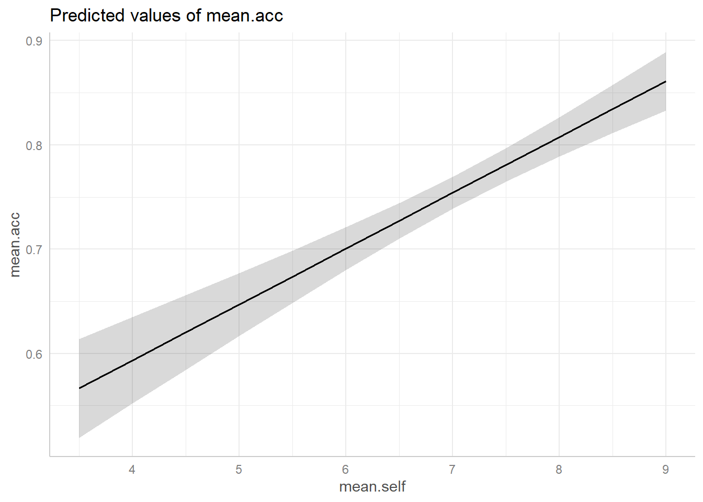
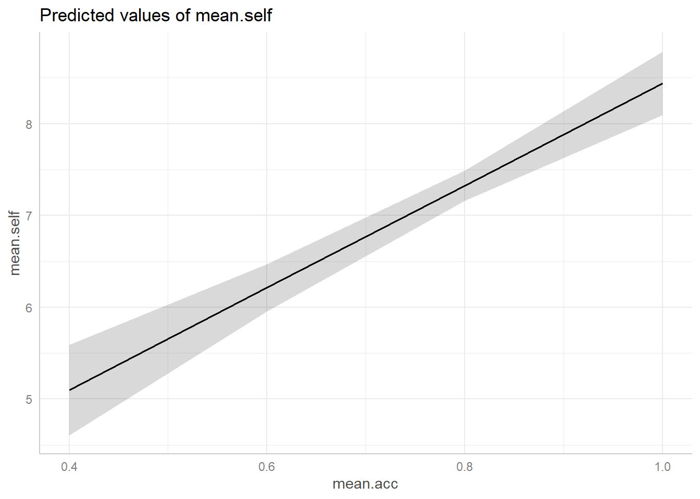
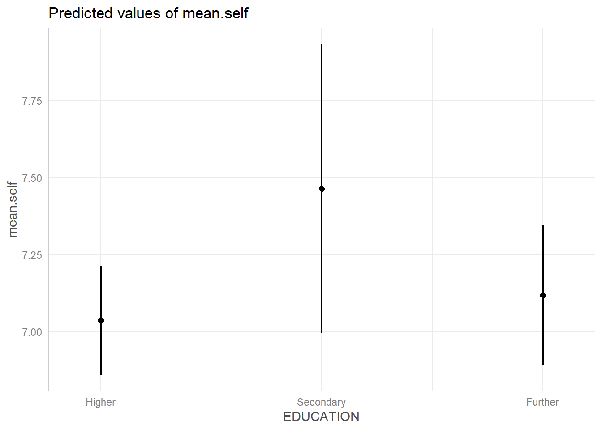

rm(list=ls()) PSYC122-w18-workbook-answers
Introduction
In Week 18, we aim to further develop skills in working with the linear model.
We do this to learn how to answer research questions like:
- What person attributes predict success in understanding?
- Can people accurately evaluate whether they correctly understand written health information?
These kinds of research questions can be answered using methods like the linear model.
When we do these analyses, we need to think about how we report the results:
- we usually need to report information about the kind of model we specify;
- and we will need to report the nature of the association estimated in our model.
We usually need to decide:
- is the association significant?
- does the association reflect a positive or negative relationship between outcome and predictor?
- and is the association we see in our sample data relatively strong or weak?
We will consolidate and extend learning on data visualization:
- focusing on how we edit ggplot() code to produce professional looking plots.
Naming things
I will format dataset names like this:
study-two-general-participants.csv
I will also format variable (data column) names like this: variable
I will also format value or other data object (e.g. cell value) names like this: studyone
I will format functions and library names like this: e.g. function ggplot() or e.g. library {tidyverse}.
The data we will be using
In this activity, we use data from a second 2020 study of the response of adults from a UK national sample to written health information:
study-two-general-participants.csv
Answers
Step 1: Set-up
To begin, we set up our environment in R.
Task 1 – Run code to empty the R environment
Task 2 – Run code to load relevant libraries
library("ggeffects")
library("tidyverse")── Attaching core tidyverse packages ──────────────────────── tidyverse 2.0.0 ──
✔ dplyr 1.2.0 ✔ readr 2.1.6
✔ forcats 1.0.1 ✔ stringr 1.6.0
✔ ggplot2 4.0.2 ✔ tibble 3.3.1
✔ lubridate 1.9.4 ✔ tidyr 1.3.2
✔ purrr 1.2.1
── Conflicts ────────────────────────────────────────── tidyverse_conflicts() ──
✖ dplyr::filter() masks stats::filter()
✖ dplyr::lag() masks stats::lag()
ℹ Use the conflicted package (<http://conflicted.r-lib.org/>) to force all conflicts to become errorsStep 2: Load the data
Task 3 – Read in the data file we will be using
The data file is called:
study-two-general-participants.csv
Use the read_csv() function to read the data file into R:
study.two.gen <- read_csv("study-two-general-participants.csv")Rows: 172 Columns: 12
── Column specification ────────────────────────────────────────────────────────
Delimiter: ","
chr (5): participant_ID, study, GENDER, EDUCATION, ETHNICITY
dbl (7): mean.acc, mean.self, AGE, SHIPLEY, HLVA, FACTOR3, QRITOTAL
ℹ Use `spec()` to retrieve the full column specification for this data.
ℹ Specify the column types or set `show_col_types = FALSE` to quiet this message.When you read the data file in, give the data object you create a distinct name e.g. study.two.gen.
Task 4 – Inspect the data file
Use the summary() or head() functions to take a look.
head(study.two.gen)# A tibble: 6 × 12
participant_ID mean.acc mean.self study AGE SHIPLEY HLVA FACTOR3 QRITOTAL
<chr> <dbl> <dbl> <chr> <dbl> <dbl> <dbl> <dbl> <dbl>
1 studytwo.1 0.411 6.07 studyt… 26 27 6 50 9
2 studytwo.10 0.607 8.5 studyt… 38 24 9 58 15
3 studytwo.100 0.875 8.93 studyt… 66 40 13 60 20
4 studytwo.101 0.964 8.5 studyt… 21 31 11 59 14
5 studytwo.102 0.714 7.07 studyt… 74 35 7 52 18
6 studytwo.103 0.768 5.07 studyt… 18 40 11 54 15
# ℹ 3 more variables: GENDER <chr>, EDUCATION <chr>, ETHNICITY <chr>summary(study.two.gen) participant_ID mean.acc mean.self study
Length:172 Min. :0.4107 Min. :3.786 Length:172
Class :character 1st Qu.:0.6786 1st Qu.:6.411 Class :character
Mode :character Median :0.7679 Median :7.321 Mode :character
Mean :0.7596 Mean :7.101
3rd Qu.:0.8393 3rd Qu.:7.946
Max. :0.9821 Max. :9.000
AGE SHIPLEY HLVA FACTOR3
Min. :18.00 Min. :23.00 Min. : 3.000 Min. :29.00
1st Qu.:25.00 1st Qu.:32.75 1st Qu.: 7.750 1st Qu.:47.00
Median :32.50 Median :36.00 Median : 9.000 Median :51.00
Mean :35.37 Mean :35.13 Mean : 9.064 Mean :51.24
3rd Qu.:44.00 3rd Qu.:39.00 3rd Qu.:11.000 3rd Qu.:56.25
Max. :76.00 Max. :40.00 Max. :14.000 Max. :63.00
QRITOTAL GENDER EDUCATION ETHNICITY
Min. : 6.00 Length:172 Length:172 Length:172
1st Qu.:12.00 Class :character Class :character Class :character
Median :14.00 Mode :character Mode :character Mode :character
Mean :13.88
3rd Qu.:16.00
Max. :20.00 Even though you have done this before, you will want to do it again, here, and pay particular attention to:
- summary information about the numeric variables;
- summary information about variables of class:
character.
Step 3: Use a linear model to to answer the research questions – one predictor
Revise: practice to strengthen skills
Revise: We start by revising how to use lm() with one predictor
One of our research questions is:
- Can people accurately evaluate whether they correctly understand written health information?
We can address this question by examining whether someone’s rated evaluation of their own understanding matches their performance on a test of that understanding, and by investigating what variables predict variation in mean self-rated accuracy.
- Note that ratings of accuracy are ordinal data but that, here, we may choose to examine the average of participants’ ratings of their own understanding of health information to keep our analysis fairly simple.
- For these data, participants were asked to respond to questions about health information to get
mean.accscores and then were asked to rate their own understanding of the same information.
If you can evaluate your own understanding then ratings of understanding should be associated with performance on tests of understanding
Task 5 – Estimate the relation between outcome mean self-rated accuracy (mean.self) and tested accuracy of understanding (mean.acc)
hint: Task 5
For these data, participants were asked to respond to questions about health information to get mean.acc scores and were asked to rate their own understanding of the same information.
hint: Task 5
We can use lm() to estimate whether the ratings of accuracy actually predict the outcome tested accuracy levels.
model <- lm(mean.self ~ mean.acc, data = study.two.gen)
summary(model)
Call:
lm(formula = mean.self ~ mean.acc, data = study.two.gen)
Residuals:
Min 1Q Median 3Q Max
-2.47926 -0.62782 0.02038 0.65403 2.37788
Coefficients:
Estimate Std. Error t value Pr(>|t|)
(Intercept) 2.8725 0.5037 5.703 5.12e-08 ***
mean.acc 5.5670 0.6550 8.499 9.36e-15 ***
---
Signif. codes: 0 '***' 0.001 '**' 0.01 '*' 0.05 '.' 0.1 ' ' 1
Residual standard error: 1.032 on 170 degrees of freedom
Multiple R-squared: 0.2982, Adjusted R-squared: 0.2941
F-statistic: 72.24 on 1 and 170 DF, p-value: 9.356e-15In R analysis code, we write method(outcome ~ predictor) so:
lm(mean.self ~ mean.acc, data = study.two.gen)- gets us an analysis of whether or how
mean.selfpredicts variation in outcomemean.acc.
If you look at the model summary you can answer the following questions.
Questions: Task 5
Q.1. What is the estimate for the coefficient of the effect of the predictor
mean.accon the outcomemean.selfin this model?A.1. 5.5670
Q.2. Is the effect significant?
A.2. It is significant, p < .05
Q.3. What are the values for t and p for the significance test for the coefficient?
A.3. t = 8.499, p = 9.36e-15
Q.4. What do you conclude is the answer to the research question, given the linear model results?
A.4. The model slope estimate suggests that higher levels of tested understanding can predict higher levels of rated understanding so, yes: it does appear that people can evaluate their own understanding.
Q.5. What is the F-statistic for the regression? Report F, DF and the p-value.
A.5. F-statistic: 72.24 on 1 and 170 DF, p-value: 9.356e-15
Q.6. Is the regression significant?
A.6. Yes: the regression is significant.
Q.7. What is the Adjusted R-squared?
A.7. Adjusted R-squared: 0.2941
Q.8. Explain in words what this R-squared value indicates?
A.8. The R-squared suggests that about 30% of outcome variance can be explained by the model
Step 4: Use a linear model to to answer the research questions – multiple predictors
Introduce: make some new moves
One of our research questions is:
- Can people accurately evaluate whether they correctly understand written health information?
We have already looked at this question by asking whether ratings of understanding predict performance on tests of understanding.
But there is a problem with that analysis – it leaves open the question:
- What actually predicts ratings of understanding?
We can look at this follow-up question, next.
Task 6 – Examine the relation between outcome mean self-rated accuracy (mean.self) and multiple predictors
Here, the predictors will include:
- health literacy (
HLVA); - vocabulary (
SHIPLEY); - age in years (
AGE); - reading strategy (
FACTOR3); - as well as average accuracy of the tested understanding of health information (
mean.acc).
hint: Task 6 – We use lm(), as before, but now specify each variable listed here by variable name
model <- lm(mean.self ~ HLVA + SHIPLEY + FACTOR3 + AGE + mean.acc,
data = study.two.gen)
summary(model)
Call:
lm(formula = mean.self ~ HLVA + SHIPLEY + FACTOR3 + AGE + mean.acc,
data = study.two.gen)
Residuals:
Min 1Q Median 3Q Max
-2.72027 -0.49118 -0.00177 0.55561 2.00134
Coefficients:
Estimate Std. Error t value Pr(>|t|)
(Intercept) 0.561110 0.700632 0.801 0.4244
HLVA 0.041272 0.034833 1.185 0.2378
SHIPLEY -0.046125 0.018701 -2.466 0.0147 *
FACTOR3 0.063689 0.010747 5.926 1.74e-08 ***
AGE 0.025570 0.005472 4.673 6.12e-06 ***
mean.acc 4.763278 0.708166 6.726 2.69e-10 ***
---
Signif. codes: 0 '***' 0.001 '**' 0.01 '*' 0.05 '.' 0.1 ' ' 1
Residual standard error: 0.8805 on 166 degrees of freedom
Multiple R-squared: 0.5014, Adjusted R-squared: 0.4864
F-statistic: 33.39 on 5 and 166 DF, p-value: < 2.2e-16Questions: Task 6
If you look at the model summary you can answer the following questions.
Q.9. What predictors are significant in this model?
A.9. Vocabulary (
SHIPLEY), reading strategy (FACTOR3),AGE, and performance on tests of accuracy of understanding (mean.acc) all appear to significantly predict variation in mean ratings of understanding (mean.self).Q.10. What is the estimate for the coefficient of the effect of the predictor
mean.accin this model?A.10. 4.763278
Q.11. Is the effect significant?
A.11. It is significant, p < .05
Q.12. What are the values for t and p for the significance test for the coefficient?
A.12. t = 6.726, p = 2.69e-10
Q.13. What do you conclude is the answer to the follow-up question, what actually predicts ratings of understanding?
A.13. Ratings of understanding appear to be predicted by performance on tests of accuracy of understanding, together with variation in age, vocabulary knowledge, health literacy and reading strategy
Step 5: Understanding linear model predictions by comparing one outcome-predictor relation
Next, we focus in on whether mean.self predicts mean.acc or, in reverse, whether mean.acc predicts mean.self?
Note that a comparison between these models teaches us something important about what it is that linear models predict.
Q.14. Why do you think it appears that the slope coefficient estimate is different if you compare :
- The model
mean.acc ~ mean.selfversus - The model
mean.self ~ mean.acc?
- hint: Q.14. You want to fit two simple models here, using the verbal description in the Q.14 wording.
1. The model mean.acc ~ mean.self
model.1 <- lm(mean.acc ~ mean.self, data = study.two.gen)
summary(model.1)
Call:
lm(formula = mean.acc ~ mean.self, data = study.two.gen)
Residuals:
Min 1Q Median 3Q Max
-0.293692 -0.069200 0.005422 0.080041 0.215240
Coefficients:
Estimate Std. Error t value Pr(>|t|)
(Intercept) 0.379182 0.045415 8.349 2.31e-14 ***
mean.self 0.053566 0.006303 8.499 9.36e-15 ***
---
Signif. codes: 0 '***' 0.001 '**' 0.01 '*' 0.05 '.' 0.1 ' ' 1
Residual standard error: 0.1013 on 170 degrees of freedom
Multiple R-squared: 0.2982, Adjusted R-squared: 0.2941
F-statistic: 72.24 on 1 and 170 DF, p-value: 9.356e-152. The model mean.self ~ mean.acc
model.2 <- lm(mean.self ~ mean.acc,
data = study.two.gen)
summary(model.2)
Call:
lm(formula = mean.self ~ mean.acc, data = study.two.gen)
Residuals:
Min 1Q Median 3Q Max
-2.47926 -0.62782 0.02038 0.65403 2.37788
Coefficients:
Estimate Std. Error t value Pr(>|t|)
(Intercept) 2.8725 0.5037 5.703 5.12e-08 ***
mean.acc 5.5670 0.6550 8.499 9.36e-15 ***
---
Signif. codes: 0 '***' 0.001 '**' 0.01 '*' 0.05 '.' 0.1 ' ' 1
Residual standard error: 1.032 on 170 degrees of freedom
Multiple R-squared: 0.2982, Adjusted R-squared: 0.2941
F-statistic: 72.24 on 1 and 170 DF, p-value: 9.356e-15hint: Q.14. You may benefit here by reflecting on the
lm-introlecture and practical materials, especially where they concern predictions.A.14. Linear models are prediction models. We use them to predict variation in outcomes given some set of predictor variables. Predictions will necessarily be scaled in the same way as the outcome variable.
So, to expand on that explanation a bit more, to help understanding – the answer is:
- If we have the model,
mean.acc ~ mean.selfthen this means that the outcome ismean.acc.
- So if we are predicting change in outcome
mean.acc, which is scaled 0-1, then we are looking at coefficients that will lie somewhere on the same scale (also 0-1). - Here: the model estimate suggests that each unit change in values of the variable
mean.selfpredicts an increase of 0.053566 inmean.acc.
- Whereas if we have the model,
mean.self ~ mean.accthen this means that the outcome ismean.self.
- So if we are predicting change in outcome
mean.self, which is scaled 1-9 , then we are looking at coefficients that will lie somewhere on the same scale (also 1-9). - Here: the model estimate suggests that unit change in
mean.accpredicts increase of 5.5670 inmean.self.
Note that:
- Where we reference model estimates, here, we are looking at the values in the
Estimatecolumn of thelm()model summary. - These estimates give us the expected or predicted change in the outcome, given change in the predictor variable named on that row.
Remember that:
mean.accis scaled from 0 to 1 because it represents the average accuracy of the responses made by study participants to questions about health texts. This average has to have a minimum of 0 (no responses correct) and a maximum of 1 (all responses correct). The average is calculated by adding up all the correct answers and dividing by the number of questions answered by each participant.mean.selfis scaled from 1 to 9 bcause it represents the average self-rated accuracy of understanding. Participants are asked to rate on a scale form 1 (not all) to 9 (very well) how well they think they understand a health information text. The average is calculated by adding up all the ratings and dividing by the number of texts responded to by each participant.
The important lesson, here, is that estimates of predictor effects are scaled in terms of predicted change in the outcome, so whatever scale the outcome measurement is in determines how big or small the predictor coefficient estimates can be.
We can visualize this to see what it means in practice.
Q.15. Can you plot the predictions from each model?
A.15. Here is the code to plot the predictions from both models.
First fit the models.
- Remember to give each model object distinct names.
model.1 <- lm(mean.acc ~ mean.self, data = study.two.gen)
summary(model.1)
Call:
lm(formula = mean.acc ~ mean.self, data = study.two.gen)
Residuals:
Min 1Q Median 3Q Max
-0.293692 -0.069200 0.005422 0.080041 0.215240
Coefficients:
Estimate Std. Error t value Pr(>|t|)
(Intercept) 0.379182 0.045415 8.349 2.31e-14 ***
mean.self 0.053566 0.006303 8.499 9.36e-15 ***
---
Signif. codes: 0 '***' 0.001 '**' 0.01 '*' 0.05 '.' 0.1 ' ' 1
Residual standard error: 0.1013 on 170 degrees of freedom
Multiple R-squared: 0.2982, Adjusted R-squared: 0.2941
F-statistic: 72.24 on 1 and 170 DF, p-value: 9.356e-15model.2 <- lm(mean.self ~ mean.acc,
data = study.two.gen)
summary(model.2)
Call:
lm(formula = mean.self ~ mean.acc, data = study.two.gen)
Residuals:
Min 1Q Median 3Q Max
-2.47926 -0.62782 0.02038 0.65403 2.37788
Coefficients:
Estimate Std. Error t value Pr(>|t|)
(Intercept) 2.8725 0.5037 5.703 5.12e-08 ***
mean.acc 5.5670 0.6550 8.499 9.36e-15 ***
---
Signif. codes: 0 '***' 0.001 '**' 0.01 '*' 0.05 '.' 0.1 ' ' 1
Residual standard error: 1.032 on 170 degrees of freedom
Multiple R-squared: 0.2982, Adjusted R-squared: 0.2941
F-statistic: 72.24 on 1 and 170 DF, p-value: 9.356e-15Second get the predictions:
dat.1 <- ggpredict(model.1, "mean.self")
dat.2 <- ggpredict(model.2, "mean.acc")Third make the prediction plots:
- Predictions from the model
mean.acc ~ mean.self
plot(dat.1)
- Predictions from the model
mean.self ~ mean.acc
plot(dat.2)
Q.16. Look at the two plots: what do you see?
hint: Q.16. Look at changes in height of the prediction line, given changes in x-axis position of the line
A.16. A side-by-side comparison shows that:
- For model
mean.acc ~ mean.selfincreases inmean.selffrom about 4 to 9 are associated with a change inmean.accfrom about .6 to about .85; - For model
mean.self ~ mean.accincreases inmean.accfrom about 0.4 to 1.0 are associated with a change inmean.selffrom about 5 to about 9.
Step 6: Estimate the effects of factors as well as numeric variables
Consolidation: build your skills
We have not yet included any categorical or nominal variables as predictors but we can, and should: lm() can cope with any kind of variable as a predictor.
There are different ways to do this, here we ask you to use the R default method.
Task 7 – Fit a linear model to examine what variables predict outcome mean self-rated accuracy of mean.self
hint: Task 7 – Include as predictors both numeric variables and categorical variables
Here, our model includes predictors that are both numeric like:
- health literacy (
HLVA); - vocabulary (
SHIPLEY); AGE;- reading strategy (
FACTOR3); - accuracy
mean.acc
As well as a categorical or nominal variable like
EDUCATION.
Note: EDUCATION is different because participants are classified by what education category (higher education, further education, secondary school) they report themselves as having received.
model <- lm(mean.self ~ HLVA + SHIPLEY + FACTOR3 + AGE + mean.acc +
EDUCATION,
data = study.two.gen)
summary(model)
Call:
lm(formula = mean.self ~ HLVA + SHIPLEY + FACTOR3 + AGE + mean.acc +
EDUCATION, data = study.two.gen)
Residuals:
Min 1Q Median 3Q Max
-2.70987 -0.50037 0.01988 0.55965 2.01412
Coefficients:
Estimate Std. Error t value Pr(>|t|)
(Intercept) 0.487753 0.702049 0.695 0.4882
HLVA 0.047100 0.034915 1.349 0.1792
SHIPLEY -0.044132 0.018719 -2.358 0.0196 *
FACTOR3 0.061918 0.010771 5.749 4.29e-08 ***
AGE 0.023997 0.005595 4.289 3.06e-05 ***
mean.acc 4.912833 0.712381 6.896 1.10e-10 ***
EDUCATIONHigher -0.082217 0.146390 -0.562 0.5751
EDUCATIONSecondary 0.346161 0.266030 1.301 0.1950
---
Signif. codes: 0 '***' 0.001 '**' 0.01 '*' 0.05 '.' 0.1 ' ' 1
Residual standard error: 0.8783 on 164 degrees of freedom
Multiple R-squared: 0.5099, Adjusted R-squared: 0.489
F-statistic: 24.38 on 7 and 164 DF, p-value: < 2.2e-16Q.17. Can you report the overall model and model fit statistics?
A.17.
We fitted a linear model with mean self-rated accuracy as the outcome and with the predictors: health literacy (
HLVA), vocabulary (SHIPLEY), reading strategy (FACTOR3),AGE, as well as mean accuracy (mean.acc) and education level (EDUCATION). The model is significant overall, with F(7, 164) = 24.38, p < .001, and explains 49% of variance (adjusted R2 = 0.489).
Q.18. Can you plot the predicted effect of
EDUCATIONgiven your model?hint: Q.18. We first fit the model, including
EDUCATION.
model <- lm(mean.self ~ HLVA + SHIPLEY + FACTOR3 + AGE + mean.acc + EDUCATION,
data = study.two.gen)- hint: Q.18. We then use the
ggpredict()function to get the prediction for the effect ofEDUCATIONdifferences on outcomemean.self.
dat <- ggpredict(model, "EDUCATION")Some of the focal terms are of type `character`. This may lead to
unexpected results. It is recommended to convert these variables to
factors before fitting the model.
The following variables are of type character: `EDUCATION`plot(dat)
Q.19. The plot should give you dot-and-whisker representations of the estimated
mean.selfoutcome for different levels ofEDUCATION. What is the difference in the estimatedmean.selfbetween the groups?hint: Q.19. The effect or prediction plot will show you dot-and-whisker representations of predicted outcome
mean.self. In these plots, the dots represent the estimatedmean.selfwhile the lines (whiskers) represent confidence intervals.A.19. The difference in the estimated
mean.selfbetween these groups is small: the groups vary between ratings of about 7, 7.10 and 7.5.Q.20. Compare the difference in the estimated
mean.selfbetween these groups, given the plot, with the coefficient estimate from the model summary: what do you see?A.20. The effect of
EDUCATIONis presented in the summary as two estimates:EDUCATIONHigher -0.082217EDUCATIONSecondary 0.346161
The reference level for EDUCATION is Further.
The estimates therefore show that people with Higher education have mean.self scores about -.08 lower than mean.self for people with Further education.
People with Secondary education have mean.self scores about .35 higher than mean.self for people with Further education.
We are learning some new things here so it is useful to explain them:
- Categorical variables or factors and reference levels.
- If you have a categorical variable like
EDUCATIONthen when you use it in an analysis, R will look at the different categories (calledlevels) e.g., here,higher education, further education, secondary school` and it will pick one level to be the reference or baseline level. - The reference is the the level against which other levels are compared.
- Here, the reference level is
Further(education) simply because, unless you tell R otherwise, it picks the level with a category name that begins earlier in the alphabet as the reference level.
- Dot and whisker plots show estimates with confidence intervals.
- Dot and whisker plots are a nice way to present a concise visual summary about the estimates we get from prediction models.
- Here, the plots show the coefficient estimates from our model (the dots) plus confidence intervals (the lines or “whiskers”).
- Confidence intervals are often misunderstood but they are helpful.
- Essentially, a confidence interval tells us about we might expect to see using our analysis procedure (Hoekstra et al., 2014).
If we were to repeat the experiment over and over, then 95 % of the time the confidence intervals contain the true mean.
- And you can read more about this here
Hoekstra, R., Morey, R. D., Rouder, J. N., & Wagenmakers, E. J. (2014). Robust misinterpretation of confidence intervals. Psychonomic Bulletin & Review, 21, 1157-1164.